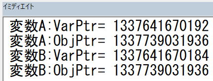
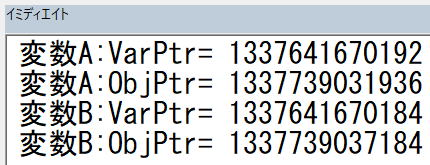

オブジェクト変数とは何か
VBAを使い始めてからある程度進むとオブジェクト変数を必ず使い始めることになります。
しかし、オブジェクト変数をどうやって使ったらよいのか、オブジェクト変数とはどういうものなのか・・・
ここの理解で苦しんでいることが多々あるようです。
オブジェクト変数については第52回.オブジェクト変数とSetステートメントででてきます。
基本構文→セルの扱い→VBA関数→オブジェクト
全体としてはこのような進み方になっていて、かなり基本的な部分、初歩的な段階ででてきます。
おそらく、この段階ではオブジェクトを入れる変数と言うのがある、こくらいの認識なのは仕方ない事です。
この程度の理解でもほとんど困ることは無いでしょう。
しかし、さらに進んで、オブジェクト変数を引数で渡したり、配列に入れたりCollectionやDictionaryに入れたりするようになると、
思った通りに動作しないことも出てきて、オブジェクト変数って何なんだろう?という疑問が出てくることになります。
そもそも変数とは何か
入れ物と表現しましたが、変数には、文字や数値と言った値だけでなく、オブジェクトも入れられます。
変数の入れ物としての大きさは
Integerは2バイト、LongやSingleなら4バイト、Doubleなら8バイト
それぞれ大きさが決まっているので、あらかじめ決められた大きさの変数（入れ物）を用意する事が出来ます。
これに対して、文字列型のStringは文字列の長さが決まっていないので、あらかじめ決められた大きさの変数を用意することができません同様にオブジェクト変数も、あらかじめ決められた大きさの変数を用意できません。
あらかじめ大きさが決められない変数としては、
Object型
Variant型
固有オブジェクト型（オブジェクトの種類、つまりクラス）
Stringは、文字列長が様々です。
Object型やVariant型は、そもそも何が入るか分かりません。
固有オブジェクト型は決められたオブジェクト（クラス）であっても、その中で保有するデータ量は様々です。
簡単な例としては、Workbookオブジェクトの大きさがまちまちなのは自然に理解できることと思います。
オブジェクト変数にオブジェクトは入っていない
例えば、Range("A1")を複数のオブジェクト変数（例えば、変数Aと変数B）に入れた場合、
それぞれの変数（変数Aと変数B）ごとにオブジェクトが存在してしまう事になります。
Dim 変数A As Range
Set 変数A = Range("A1")
Dim 変数B As Range
Set 変数B = 変数A
変数Aと変数Bにそれぞれオブジェクトが入っているとしたら、同じRange("A1")が2つ存在する？
片方の変数のValueを変更したら、もう一方の変数のValueはどうなるの？
つまり、実際のオブジェクトは1つしか存在しないという事です。
では、変数Aと変数Bには何が入っているのかという事になります。
オブジェクトがどこにあるかのを示す情報が入っています。
ショートカットは複数作れますが、ファイルそのものは同じ1つのファイルです。
Windowsのショートカットはファイルそのものではありません、ショートカットにはファイルの場所を示す情報（ファイルのフルパス）が入っているのです。
2つの変数に同じオブジェクトを入れた場合、それぞれの変数の中にはオブジェクトの同じメモリアドレスが入ります。
オブジェクト変数のメモリアドレス
変数のメモリアドレスを確認するには、以下の関数を使います。
Dim 変数A As Range
Set 変数A = Range("A1")
Dim 変数B As Range
Set 変数B = 変数A
Debug.Print "変数A:VarPtr="; VarPtr(変数A)
Debug.Print "変数A:ObjPtr="; ObjPtr(変数A)
Debug.Print "変数B:VarPtr="; VarPtr(変数B)
Debug.Print "変数B:ObjPtr="; ObjPtr(変数B)
この結果は、
※Windows10+Excel2019(64bit)
※メモリアドレスは実行のたびに変わります。
ObjPtr関数の戻り値で、オブジェクトのメモリアドレスが同じであることが確認できます。
適当にクラスを作ってやってみます。
ちなみに、クラスモジュールだけ挿入すればクラスのインスタンスは作成できます。
Dim 変数A As Class1
Set 変数A = New Class1
Dim 変数B As Class1
Set 変数B = 変数A
Debug.Print "変数A:VarPtr="; VarPtr(変数A)
Debug.Print "変数A:ObjPtr="; ObjPtr(変数A)
Debug.Print "変数B:VarPtr="; VarPtr(変数B)
Debug.Print "変数B:ObjPtr="; ObjPtr(変数B)

当然、それぞれにNewした場合は、別々のオブジェクトになります。
Dim 変数A As Class1
Set 変数A = New Class1
Dim 変数B As Class1
Set 変数B = New Class1
Debug.Print "変数A:VarPtr="; VarPtr(変数A)
Debug.Print "変数A:ObjPtr="; ObjPtr(変数A)
Debug.Print "変数B:VarPtr="; VarPtr(変数B)
Debug.Print "変数B:ObjPtr="; ObjPtr(変数B)

別々に定義したからといって、別々のオブジェクトが作成されるわけではありません。
Dim 変数A As Range
Set 変数A = Range("A1")
Dim 変数B As Range
Set 変数B = Range("A1")
この場合のObjPtrは別々の値になりますが、
Range("A1")が複数あるわけもなく、
これらはさらにその先で管理されていて、同じオブジェクトにたどり着くようになっています。
Newで作ることの出来ないクラスに関しては、このように特殊な管理がされていると考えてください。
Is演算子によるオブジェクトの比較
If オブジェクト1 Is オブジェクト2 Then
Object1とobject2の両方が同じオブジェクトを参照する場合はTrueになります。
それ以外はFalseになります。
オブジェクト変数（As Object または、As 固有オブジェクト型）の初期値はNothingです。
Is演算子による比較は参照が同じかどうか判定をします、つまり、ObjPtr関数の取得値の比較と同じ意味になります。
Dim 変数A As Worksheet
Debug.Print 変数A Is Nothing '→ True
Set 変数A = Worksheets(1)
Dim 変数B As Worksheet
Set 変数B = 変数A
Dim 変数C As Worksheet
Set 変数C = Worksheets(1)
Debug.Print 変数A Is 変数B '→ True
Debug.Print 変数A Is 変数C '→ True
Set 変数C = Worksheets(2)
Debug.Print 変数A Is 変数C '→ False
Rangeブジェクトの場合は注意が必要です。
Dim 変数A As Range
Set 変数A = Range("A1")
Dim 変数B As Range
Set 変数B = 変数A
Dim 変数C As Range
Set 変数C = Range("A1")
Debug.Print 変数A Is 変数B '→ True
Debug.Print 変数A Is 変数C '→ False
Rangeが特殊であることが分かります。
TypeOf演算子
指定された型との間で型と互換性があるかどうかを確認します。
TypeO 演算子は、objectexpressionの実行時の型がtypenameと互換性があるかどうかを調べます。
互換性は、typenameの型のカテゴリに依存します。
Implementsを指定したクラスの場合、
TypeName関数は、Implementsとは関係なくそれぞれのクラス名が返されますが、
TypeOf演算子は互換性を確認するので元のクラスと同一判定されます。
オブジェクト変数を使う時の注意点
ByValは値渡し、つまり、変数の中の値を渡しています。
言い換えると、
ByRefは、VarPtrを渡しています。
ByValは、ObjPtrを渡しています。
Sub test1()
Dim myRng As Range
Set myRng = Range("A1")
myRng.Value = "test"
Call test1_sub(myRng)
Debug.Print myRng.Value
End Sub
Sub test1_sub(ByVal arg As Range)
arg.Value = "test_sub"
End Sub
この結果は、
test_sub
と出力されます。
ByValだからと言って、オブジェクトの中身を渡せるわけはなく、あくまでオブジェクトのアドレスを渡しているという事です。
そして、オブジェクトのアドレスを受け取れば、そのオブジェクトに対する操作はByRefと同じ結果となります。
Sub test2()
Dim myRng As Range
Set myRng = Range("A1")
myRng.Value = "test"
Call test2_sub(myRng)
Debug.Print myRng.Address
End Sub
Sub test2_sub(ByVal arg As Range)
Set arg = Range("A2")
End Sub
この結果は、
$A$1
と出力されます。
オブジェクト変数でのByRefとByValの違いは、
呼び出された中でオブジェクト変数に別のオブジェクトを入れたとき、呼び出し元のオブジェクト変数がいれかわるかどうかだけになります。
コレクションの1要素であるオブジェクトをWithで使う時は注意が必要です。
Sub test3_1()
Debug.Print Worksheets(1).Range("A1").Address
Rows(1).Insert
Debug.Print Worksheets(1).Range("A1").Address
End Sub
記述が長いので、Withでまとめてみましょう。
Sub test3_2()
With Worksheets(1).Range("A1")
Debug.Print .Address
Rows(1).Insert
Debug.Print .Address
End With
End Sub
上記2つのVBAでは結果が違ってきます。
前者のtest3_1では、
$A$1
$A$1
後者のtest3_2では、
$A$1
$A$2
しかし、Withが単なる表記の省略として考えてしまうと、上記のような書き直しの間違いを起こす可能性があります。
行挿入によって、Withで捉えたオブジェクトはコレクションの中で位置がずらされます。
そして、Withの中では常にWithで捉えたオブジェクトを参照します。
With内では、そのオブジェクトのコレクション内での位置をずらすような記述はしないようにしましょう。
記述時点ではそれが正しい処理であったとしても、後々のトラブルの元になります。
全てのオブジェクト変数が解放（= Nothing）されたときにオブジェクトは破棄されます。
Sub test3()
Dim 変数A As Class1
Set 変数A = New Class1
変数A.gValue = "変数A"
Dim 変数B As Class1
Set 変数B = 変数A
Set 変数A = Nothing
Set 変数B = Nothing 'これでClass1は破棄されます。
End Sub
ただし、当り前ではありますが、
RangeオブジェクトやWorksheetオブジェクトが破棄されることはありません。
オブジェクト変数の最後に
しかし、これを理解できずには自在にVBAを使いこなすことはできません。
そして、一度理解してしまえば、その挙動は至極当たり前に思えてきます。
当たり前の挙動と思えるようになるまでは、オブジェクト変数を扱う時は常にその挙動に注意してVBAを書き進めるようにしてみてください。
Withステートメント｜VBA入門
同じテーマ「マクロVBA技術解説」の記事
文字列結合&でコンパイルエラーになる理由
手動計算時の注意点と再計算方法
VBAの用語について：ステートメントとは
オブジェクト変数とは何か
VBAの小数以下の演算誤差について
スピルでVBAの何が変わったか
CharactersプロパティとCharactersオブジェクト
ユーザーに絶対に停止させたくない場合のVBA設定
印刷範囲の設定・印刷範囲のクリア
VBAの省略可能な記述について
VBAのVariant型について
新着記事NEW ・・・新着記事一覧を見る
VBA100本ノック 100本目：WEBから100本ノックのリストを取得｜VBA練習問題（3月3日）
VBA100本ノック 99本目：自動席替え（行列と前後左右が全て違うように）｜VBA練習問題（3月2日）
VBA100本ノック 98本目：席替えルールが守られているか確認｜VBA練習問題（3月1日）
VBA100本ノック 97本目：Accessデータを取得（グループ集計）｜VBA練習問題（2月27日）
VBA100本ノック 96本目：Accessデータを取得（マスタ結合&抽出）｜VBA練習問題（2月26日）
VBA100本ノック 95本目：図形のテキストを検索するフォーム作成｜VBA練習問題（2月24日）
VBA100本ノック 94本目：表範囲からHTMLのtableタグを作成｜VBA練習問題（2月23日）
VBA100本ノック 93本目：複数ブックを連結して再分割｜VBA練習問題（2月22日）
VBA100本ノック 92本目：セルの色を16進で返す関数｜VBA練習問題（2月20日）
VBA100本ノック 91本目：時間計算（残業時間の月間合計）｜VBA練習問題（2月19日）
アクセスランキング ・・・ ランキング一覧を見る
1.最終行の取得（End,Rows.Count）｜VBA入門
2.RangeとCellsの使い方｜VBA入門
3.変数宣言のDimとデータ型｜VBA入門
4.マクロって何？VBAって何？｜VBA入門
5.Range以外の指定方法（Cells,Rows,Columns）｜VBA入門
6.セルのコピー&値の貼り付け（PasteSpecial）｜VBA入門
7.繰り返し処理（For Next)｜VBA入門
8.セルに文字を入れるとは（Range,Value）｜VBA入門
9.マクロはどこに書くの（VBEの起動）｜VBA入門
10.とにかく書いてみよう（Sub,End Sub）｜VBA入門
- ホーム
- マクロVBA応用編
- マクロVBA技術解説
- オブジェクト変数とは何か
このサイトがお役に立ちましたら「シェア」「Bookmark」をお願いいたします。
記述には細心の注意をしたつもりですが、
間違いやご指摘がありましたら、「お問い合わせ」からお知らせいただけると幸いです。
掲載のVBAコードは動作を保証するものではなく、あくまでVBA学習のサンプルとして掲載しています。
掲載のVBAコードは自己責任でご使用ください。万一データ破損等の損害が発生しても責任は負いません。